Buildings for Humid Tropics
| 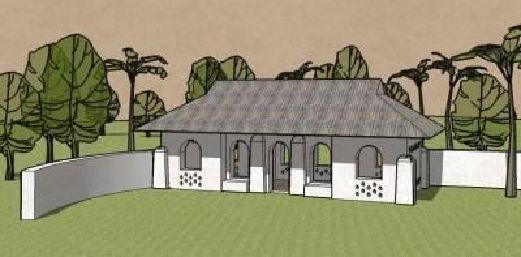 | 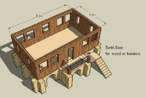 |
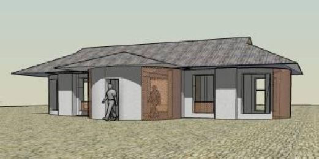
Patti Stouter, ASLA
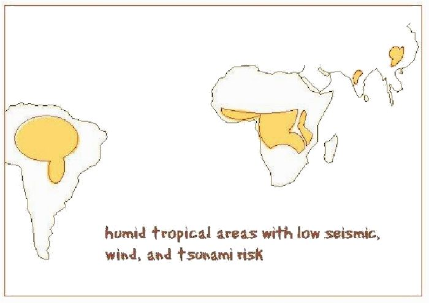
First edition, November, 2008
Introduction
Earth buildings have sheltered most people throughout history. In recent generations many parts of the world have abandoned pure earth for other materials, especially those involving cement and steel. In many areas the skills of building with earth have vanished or become rare. During this same time, the kinds of buildings people need has changed as their cultures have undergone massive changes.
Earth is in many ways the best material for the humid tropical regions, especially where naturally occuring pumice or scoria is available to create less dense buildings. Earth is also the most available and sustainable material today. One new technology for using earth in bags may be the cheapest and simplest way to build. Earthbag buildings require sizing and spacing similar to the requirements of mud block or adobe, with slightly closer spacing of wall supports.
This book provides some basic ideas for simple houses that can be built of earthbag. Examples of different styles of piers and roofs and windows are shown to help you understand the options available. The traditional details and styles of buildings are part of a peoples’ cultural riches. Although new materials and technologies come to an area, much of the beauty of their traditional buildings can be- and should be- saved.
In many parts of the world buildings must be extra strong for earthquakes or hurricanes and tsunamis. Other publications can help you plan for this.1 West Africa, northeastern South America and some parts of China and India do not have many earthquakes. If you live far enough inland where cyclones are not strong and tsunamis can’t reach, these guidelines can help you try a new way of building simple structures with earth. Your buildings must resist termites and mold as well as be right for the climate, and for how people live.
ABOUT THE PLANS
These buildings have been sized to conform to the rules that have kept mud block buildings without cement, asphalt, or steel standing for centuries in areas without serious hazards. If you want to add steel rebars or a small amount of cement to stabilize individual bags, it could be added at the corners or between windows.
Modern earth buildings too often use cement when it is not necessary. Many designers are not familiar with earth construction. Often engineers and architects specify structures that are much stronger than necessary. They know that sometimes contractors make mistakes, and want to be sure that no matter what is left out, the building will be safe. If you are building your own house, you can be careful about each step. You can be sure to do everything properly, and a pure earth building will be more than good enough.
Earthbag buildings are only strong enough to be safe if they are built correctly. Get advice from people in your area about the consistency of earth, the best exterior finishes, and proper roof construction. Buildings need firm foundations. Earthbag buildings need to be protected from too much exposure to sunlight until the bags are covered. Keying the courses to each other and using a coursed bond pattern are critical. Piers and corners must be interlaced. They are strongest if tied together with barbed wire or rebars. Longer tubes instead of bags provide extra strength at piers and above openings. Permanent cord or galvanized wire can also be used to tie piers and corners together.
These plans could also be built of mud block or rammed earth. Mud block, because it is built drier than earthbag, may not require as many piers. Rammed earth, because it is contained in forms, may not need piers in some locations. Expert advice about mud block or rammed earth may allow you to space windows closer. But these same house shapes could be used.
HOUSE STYLES
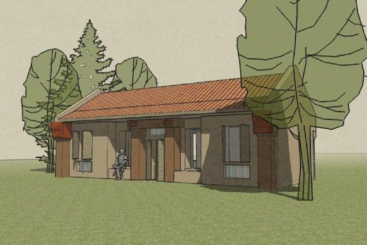
Your building should be beautiful as well as useful. Think about the shapes of older buildings in your areas. Earthbags can be shaped in many ways, and you should make buildings that fit your area and lifestyle. The shapes of window and door openings, the angle of roofs, and the size and proportions of any piers or buttresses can make your building fit in.
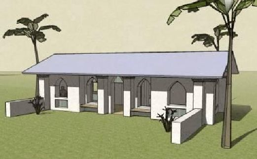
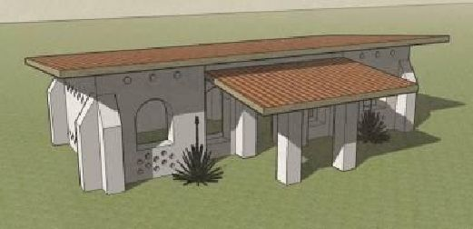
BASIC HOUSE PLANS
Buildings for hot, humid areas need windows to let breezes cool them off. Yet earth buildings are strongest with fewer windows. Rooms where people gather overheat easily and need more windows. You must decide how much of the walls need to be openings. If you have a good supply of light gravel like scoria or pumice, your building may still be comfortable with fewer windows.
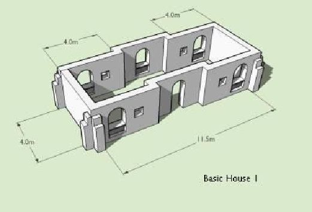This basic house has walls that jog to provide strength. Large windows are spaced the standard minimum distances from corners and other openings. Spaces below windows can be filled by ventilated block or brick. Extra smaller windows (60x60cm) can be fit in between without weakening the walls.
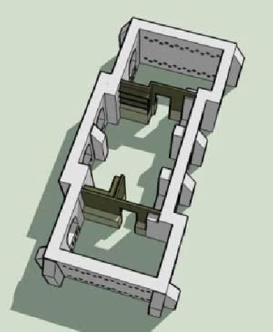Buildings that need good ventilation can have round vents added in double rows in walls, like on the building at right. These vents can be ceramic or plastic tubes that sit between the earthbags. The earthbags will be spaced out further than usual. But this will not disturb the wall strength if earthbag tubes are used, or if the vents only occur in double rows. Having extra ventilation near floor level may help prevent the higher condensation that often causes a ring of mold to grow above the floor. The extra vents near the ceiling level allow hot air to more easily leave, keeping heat from building up as much inside. Small buildings with a lot of windows also need to be planned carefully to fit in space for storage. Basic House 1 might need to give up two of the smaller windows to fit in a bedroom closet and a food storage area.
The key to wall strength is allowing about a square meter of wall material between windows. For walls of standard bags that are about 50cm thick, the wall must be 2 m between windows to provide a cross-section area of 1 square meter.
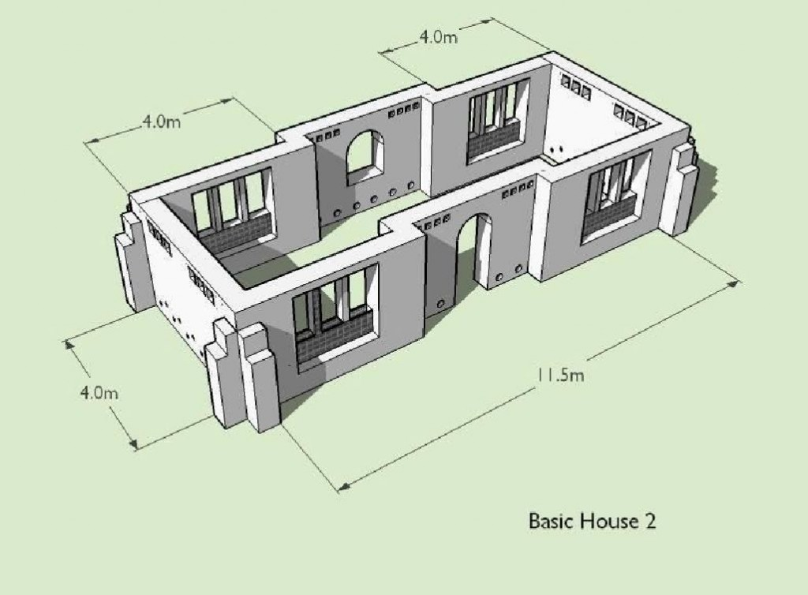Earthbag is not as strong in narrow tall shapes as mud block or fired brick or reinforced cement. Sometimes people use brick columns or wood supports between windows to space them closely. The large grouped windows of Basic House 2 need supports for the bond beam above.
Mixing these other materials with earthbag will cost more. It must also be done carefully to prevent problems as the earthbags are compressed and cure. Earthbags compress as they are tamped, have courses placed on top, and then finally hold the weight of the roof. If stiffer materials like fired brick or concrete vent blocks are used for columns between windows, it may be best to have them extend all the way up to the bond beam. You can also add rows of vent block just under the bond beam more easily than in the middle of earthbag walls.
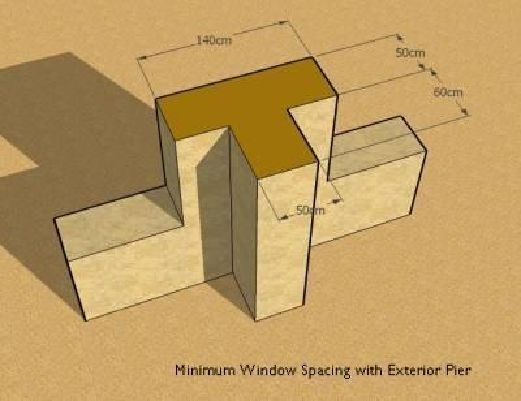Pure earthbag can still be built with windows closer together. Walls can be thickened by adding piers between windows. As long as there is at least a square meter of wall cross-section between the windows, it will be strong enough.
The walls may be strongest, and allow closer windows if the pier extends both inside and out from the wall. Inside piers can sometimes be combined with interior walls.
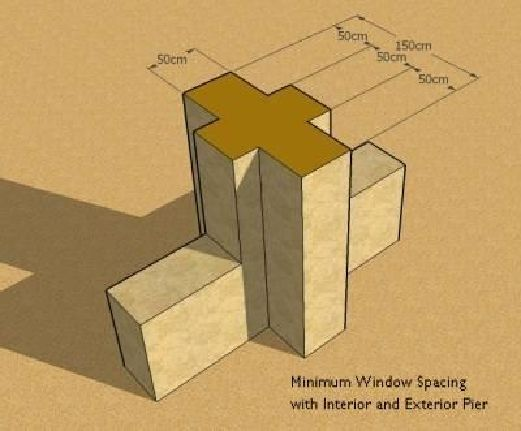
Most of the plans shown here use piers between windows. The plans are laid out for 1.5m between the windows with an exterior pier. If you use other pier shapes, the windows can be grouped more closely. For small buildings, the difference between 1.5 m and 1.1 m spacing between the windows does not make a lot of difference to the overall plan. If you are building a larger building, you will want a local designer to help you plan, and he or she will adjust your building lengths for the kind of piers you use.
In some regions with traditions of cob earth building (like Africa) people may prefer piers that look more like thickened wall portions. These flattened piers do not have to extend as far out from the walls.
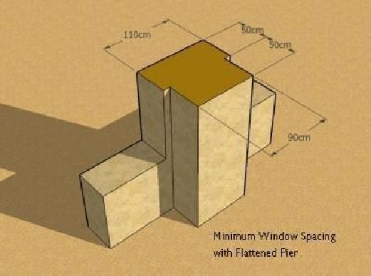
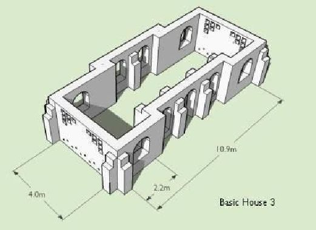
Earthbag houses that have long, straight walls will need piers to keep them strong, whether they have windows or not.
Basic House 3 has some extra vent block in the east and west walls to provide more ventilation. Notice that these blocks don’t interrupt very many course of bags, and they leave room to tie the bond beam into the earthbags in the center of the wall.
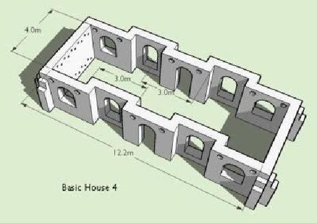There are two ways to make walls strong without piers. One is using what Sri Laurie Baker called corrugated walls. When a wall jogs, it has the same area added to it as in a pier. The house’s outside wall appears simpler, and the wall includes nooks that can be useful.
Basic House 4 also has some round ventilation openings in the south and north walls. These should not be too close to the arches, to allow a couple of courses or more of bags to cross above the arch to tie it together.
The second way to create strong walls without piers is by using curves. Round walls are very strong. They also can enclose more space with less wall length. In many areas round buildings were the earliest structures and have become a part of the peoples’ heritage that could not be reproduced easily with concrete construction techniques.
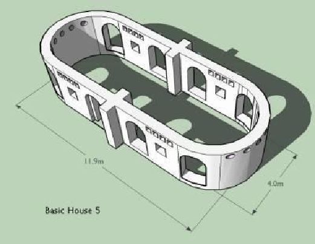Round walls may be slightly harder to build openings in. Because they use shorter exterior walls, they may also fit fewer windows than a rectangular house of the same size.
One option for curved walls is to use vent block or bricks of some sort to build a curving screenwork, so that ventilation comes through the walls instead of just the windows.
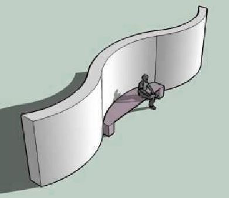Some people use walls that curve in and out gently for garden walls. These serpentine walls would make an unusual but strong building wall.
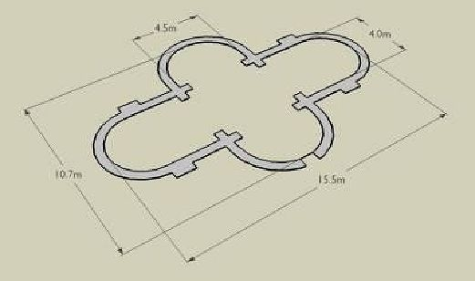
A larger rounded house could have rounded wings that extend either side. The roof would be a little harder to build, but not many piers are needed.
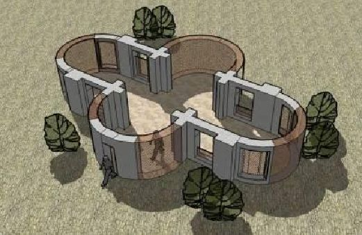This rounded house doesn’t have long enough walls to fit as many windows in as a rectangular house would. But it can have enough ventilation by building the central curving walls of openwork brick or vent block. Panels in the other walls could be built of the same ventilated block or brick.
EARTH AS A BASE
In some areas bamboo or wood are preferred as long as they are about a meter above the ground and the termites. Earthbag can make a good, inexpensive base for a lighter weight building. In some places naturally strong arch shapes are used to reduce the amount of material needed, or to allow breezes to cool the underside of the main floor. Sometimes hollow concrete floor decking is available. This kind of flooring is resistant to termites and cooler than solid concrete.
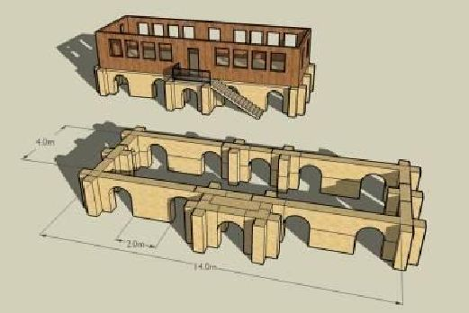A raised building will need an access stairway, or a ramp to the uphill side if it is located on a hillside.
Wood or bamboo can be built with windows closer together than earth. Sometimes the upper floor can be wider than its base. Your local builders will know the best way to build it.
In some hot areas people prefer long rooflines and a central loft. The central upper area is more breezy. A basic earth house can have this kind of roof and a simple loft. A stairway can either fit inside or outside. Be careful that it doesn’t block too much breeze outside.
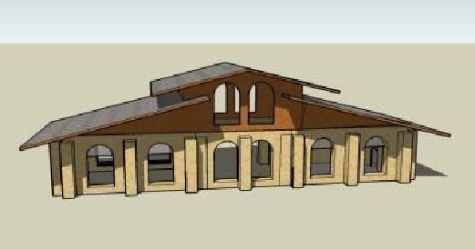
HOUSES THAT GROW
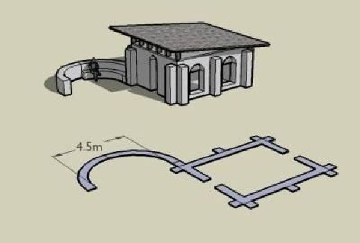Many people need to build their houses a little at a time. The next plans show a very basic starter house that can be added onto in different ways.
This house is the smallest basic size to have 2 wide windows on the longer sides. It could be built with a simple shed roof because they are the easiest and take the least materials.
A family might be a little squeezed in this small house, but once they were living there it is easier to continue working on the building.
Adding a portion of a courtyard wall might be the next step, to give added protection from cooling winds for outdoor work.
The next step might be to build another rectangle to form a doubled house. The first simple roof could be taken apart and the materials used to form a cooler gable roof.
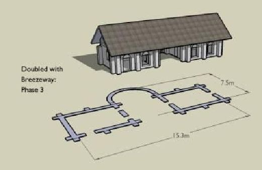

If the breezeway is sized narrow enough for a beam to span it, the breezeway can be roofed without needing more support walls. This is a very inexpensive way to get more usable space. A screen wall across the breezeway can make it into a useful indoor room.
Two doorways in the breezeway wall could allow a bathroom and kitchen/ or food storage room to be added in the future.
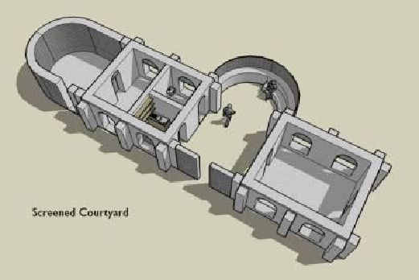Adding a curved wall onto one or both ends can be an inexpensive way to make extra bedrooms. If the bedrooms do not need large windows, vent block or screenwork could be used.
For a larger gathering space the breezeway could have porch roofs added either side. The breezeway can become a central room with curved walls on either end. Since gable end walls are hotter than Dutch hip roofs, the gable roof can have Dutch hip ends added on top of the latest additions.
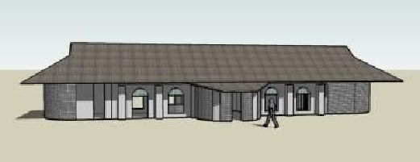This house that grew is no longer a simple house. Perhaps the family will get help from a designer along the way to make the house work better for their individual needs or their particular site.
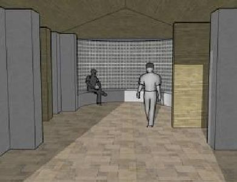
Whether it is planned by the builders or a designer, a simple starter house can lead to bigger things.


{kind=link}